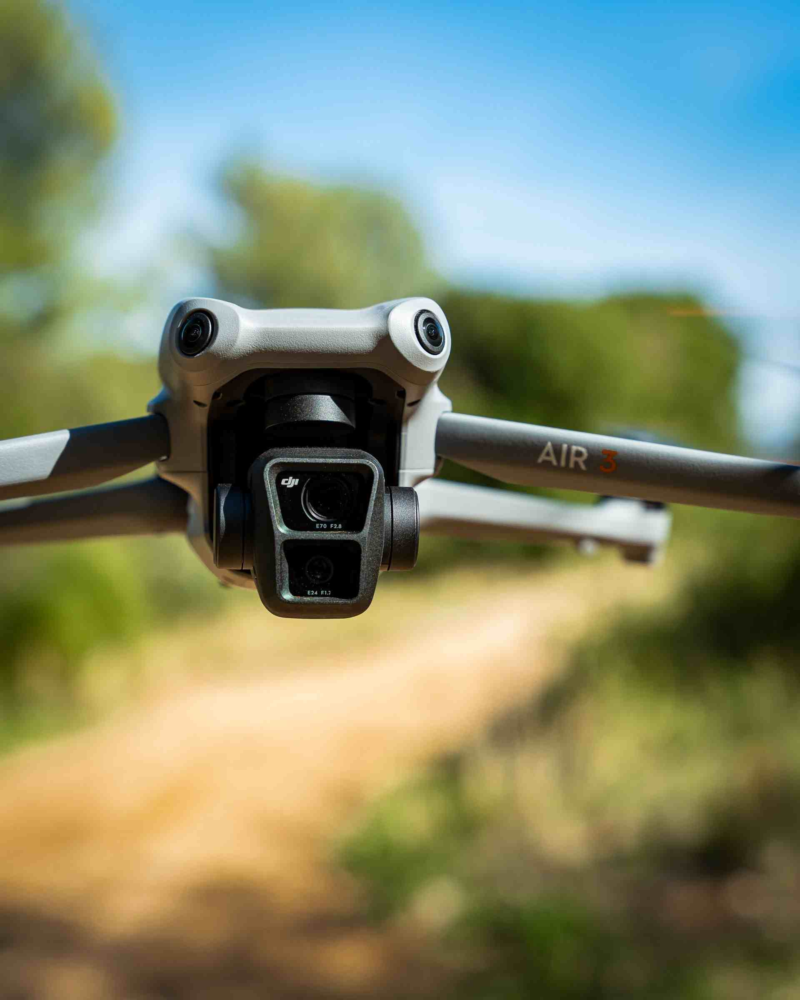
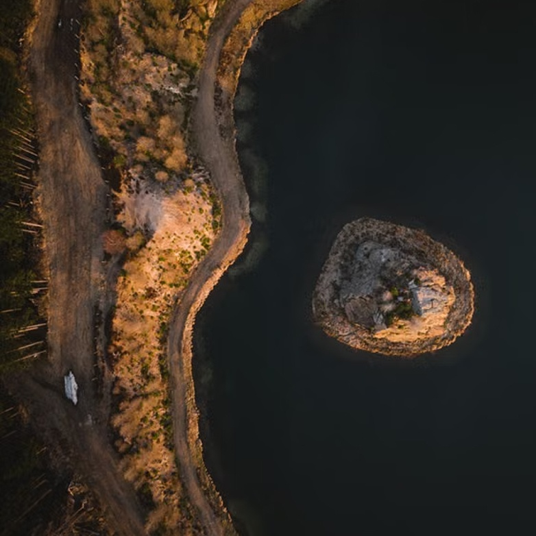
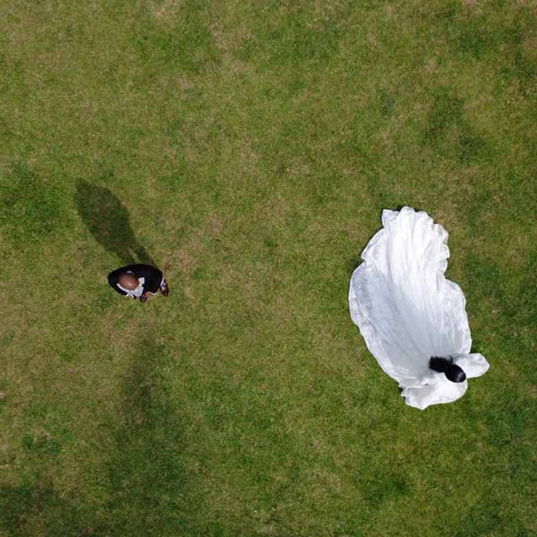

Video iz zraka donosi pokret, širinu i osjećaj prostora koji klasične snimke ne mogu uvijek
prenijeti.
U UPFRAME-u stvaramo snimke koje nisu samo vizualno atraktivne, već imaju svrhu.
Svaki let i svaki kadar planiramo
prema projektu, lokaciji i priči koju želimo ispričati.
Video iz zraka donosi pokret, širinu i osjećaj prostora koji klasične snimke ne mogu uvijek prenijeti. U UPFRAME-u stvaramo snimke koje nisu samo vizualno atraktivne, već imaju svrhu. Svaki let i svaki kadar planiramo prema projektu, lokaciji i priči koju želimo ispričati.
Neke stvari jednostavno izgledaju drugačije kada se odmaknete. Perspektiva iz zraka omogućuje nam da prostor sagledamo kao cjelinu, naglasimo njegove razmjere i otkrijemo detalje koji iz uobičajenog kuta ostaju nevidljivi.
Zato ne snimamo samo odozgo. Tražimo kadar koji najbolje prenosi atmosferu, ideju i karakter onoga što snimamo.


Stvaramo sadržaj koji prenosi atmosferu destinacije i iskustvo koje ona nudi.
Bilježimo trenutke, energiju i razmjere događaja iz perspektive koja omogućuje da se vidi cijela priča.
